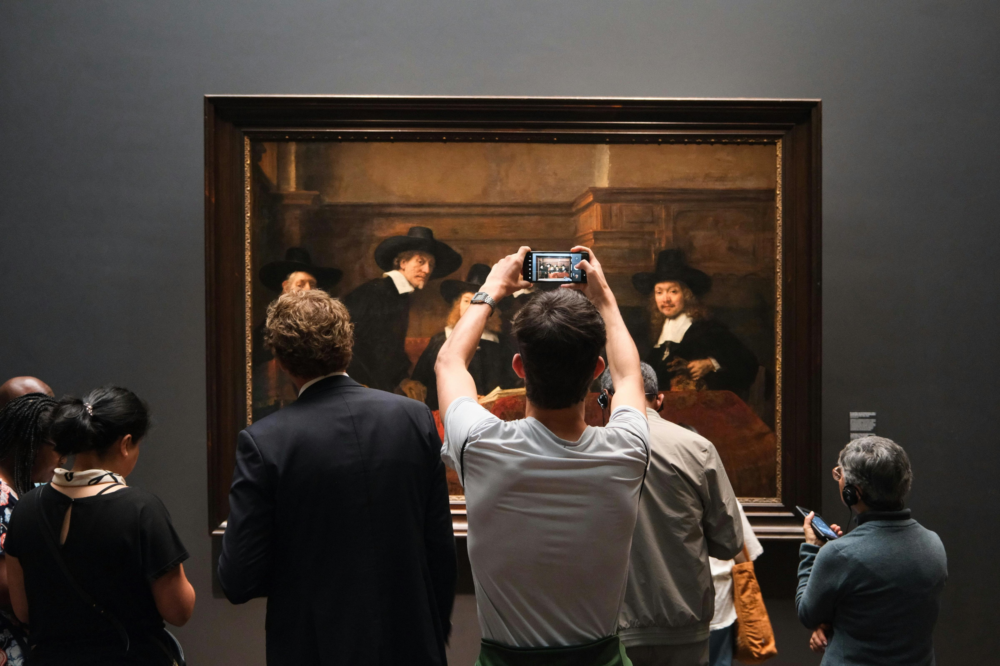
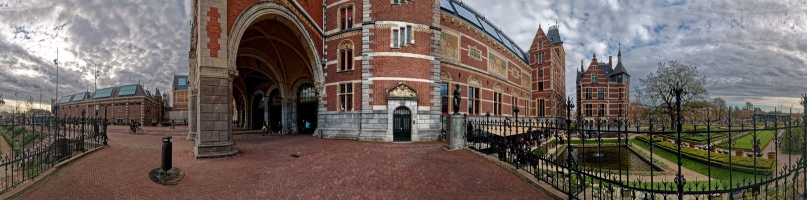
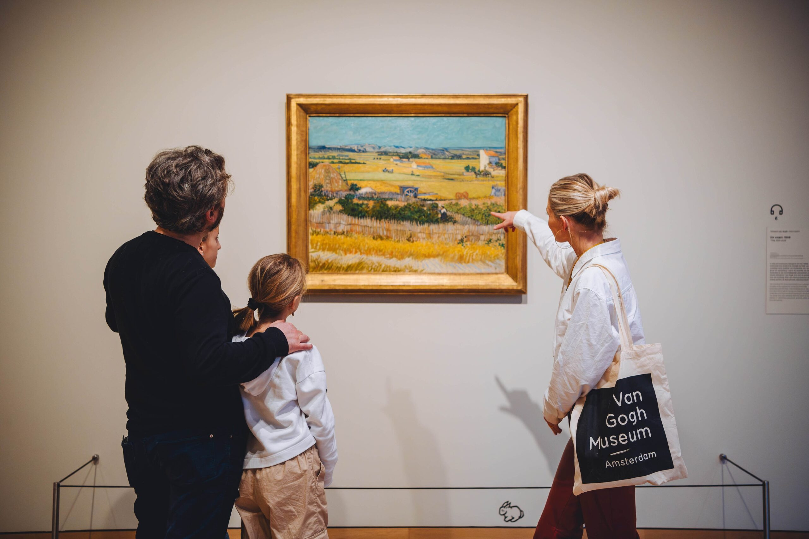
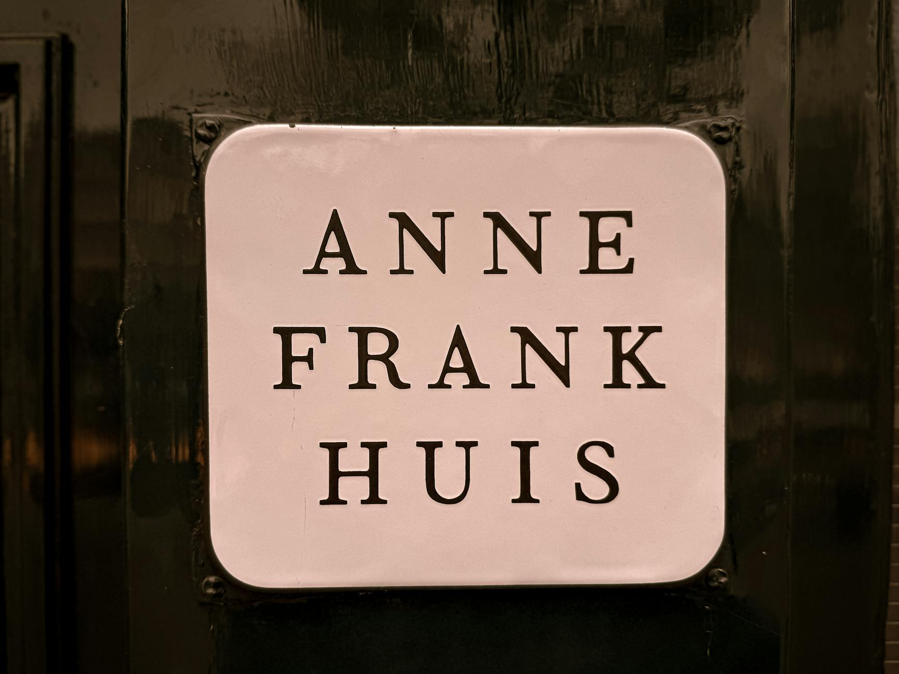
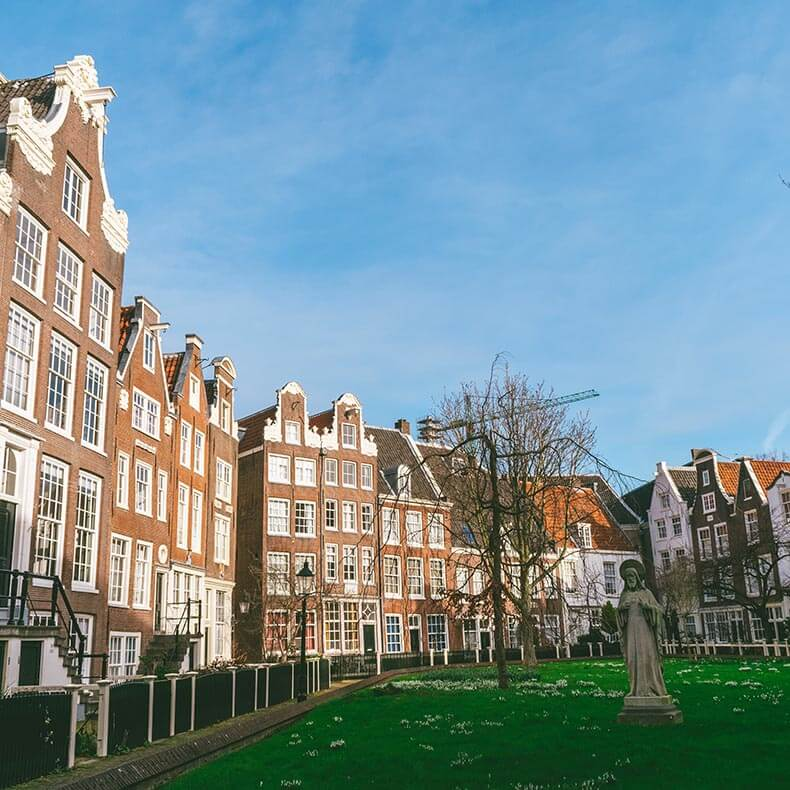
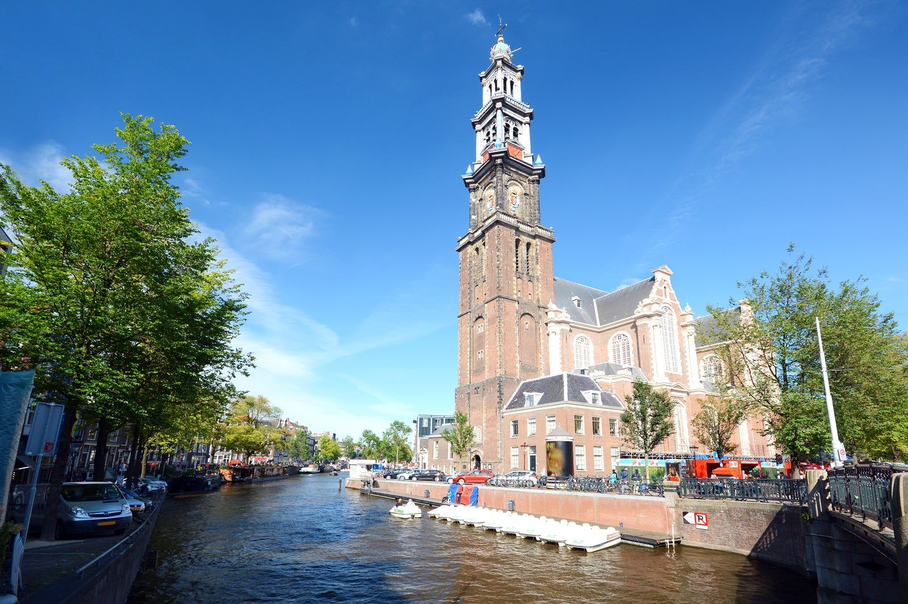
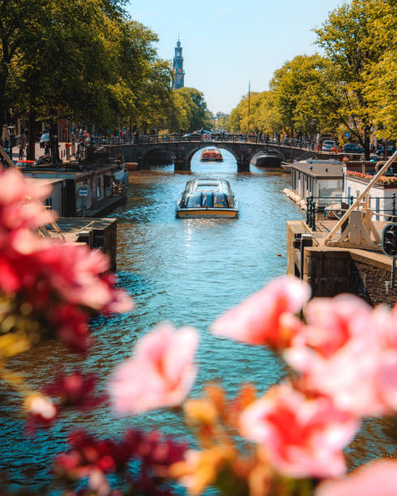
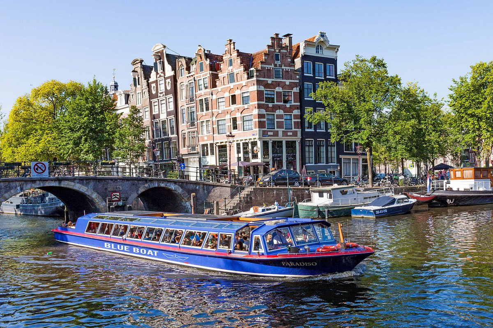
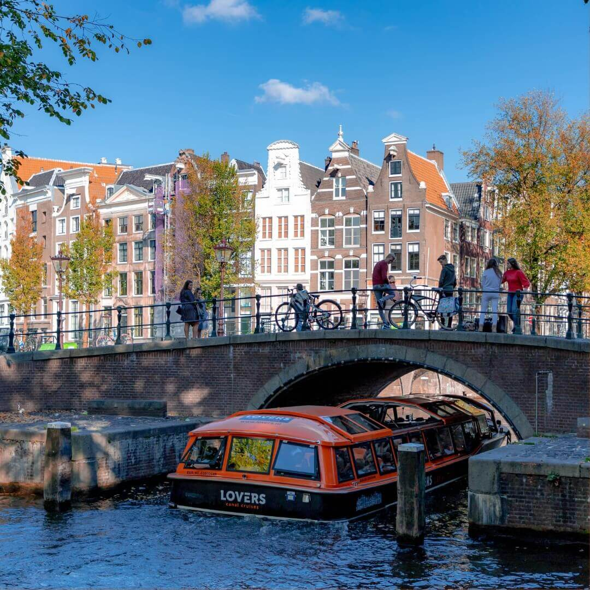

Art & Dutch Masters
The Rijksmuseum alone could fill two days. The trick is going early, going often.




Also worth it: Our Lord in the Attic — hidden Catholic church
A full Catholic church concealed inside the attic of a 17th-century canal house on Oudezijds Voorburgwal. Built secretly during the Reformation and used for 200 years before Catholics could worship openly. Three floors of canal house below; a full nave above. One of Amsterdam's most extraordinary hidden spaces. See the Churches & Spaces page for details.
Nature & Animals
Bodhi's territory, but Artis and Hortus are genuinely great for everyone.


Music & Performance
The Concertgebouw is one of the great concert halls of the world. Use it.

Also: Le nozze di Figaro — Dutch National Opera book now
May 23, 25, and 28. New production of Mozart's opera with the Netherlands Chamber Orchestra at the Dutch National Opera, two minutes from the apartment on performance nights. Various price levels by seat. Book at operaballet.nl. See Music & Events for full details.


Peaceful Spaces
The quietest and most beautiful places in a busy city.



Also: Rijksmuseum gardens free
The formal gardens on either side of the Rijksmuseum tunnel are free to walk through: sculpture, seasonal plantings, and a café. A quiet half-hour between museum visits or a place to let Bodhi run while others rest. See Churches & Spaces for more calm spots.
Essential Amsterdam
The things that are simply Amsterdam: boat, stroopwafel, canal.




Book these before you leave
Some take minutes. Some require being ready at a specific moment. All are worth doing now.
Tickets release Tuesdays at exactly 10:00AM CET, six weeks before your visit date. For a late-May visit, that means mid-to-late March. Create your account at annefrank.org now so you're ready the moment tickets open.
The annex has steep narrow stairs; no stroller access. Best plan: Jon and Jess take an evening slot (open until 10PM), Scott, Edie, and Bodhi enjoy the Begijnhof or a canal walk.
Complete booking checklist
- Vrienden van het Rijksmuseum — buy immediately best value Two duo memberships at €90 each = €180 total for all 4 adults. Digital card emailed right away. Unlocks Fast Lane entry, unlimited visits, 10% café discount, 15% shop discount. Best money you'll spend.
- Anne Frank House — Tuesdays 10AM CET, 6 weeks out Mid-to-late March. €16.50/adult. Bodhi pays €1 booking fee only. Create account at annefrank.org first.
- Emmylou Harris, Concertgebouw — May 24 sells out Book now at concertgebouw.nl. ~€60/ticket.
- Le nozze di Figaro, Dutch National Opera May 23, 25, or 28. Various prices by seat. Book at operaballet.nl.
- Keukenhof + Keukenhof Express bus keukenhof.nl for park tickets (~€21.50 online). Keukenhof Express bus from Amsterdam RAI = €18.20 round trip per person. Bodhi free on both.
- Miffy Museum Utrecht (Nijntje Museum) nijntjemuseum.nl. Book in advance. Designed for ages 2–6.
- I amsterdam City Card 72h €108/person, buy online. Activate Day 4 morning; covers through Day 7 evening.
Rijksmuseum exhibitions closing May 25
"Metamorphoses" and "FAKE!" both close on May 25. If either interests you, plan to visit the Rijksmuseum in your first day or two. The permanent collection (Gallery of Honour, the Vermeers, the Night Watch) is always there.